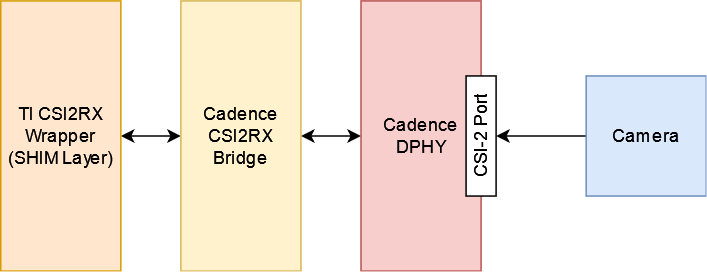

3.2.2.3. CSI2RX¶
3.2.2.3.1. Introduction¶
The CSI2RX subsystem is present on some TI SoCs which facilitates the capture of camera frames over a MIPI CSI-2 bus. The driver is based on the Video for Linux 2 (V4L2) API. It implements V4L2’s Media Controller (MC) API.
3.2.2.3.2. Hardware Architecture¶
The CSI2RX subsystem is composed of 3 IPs: Cadence DPHY, Cadence CSI2RX bridge, TI CSI2RX DMA wrapper (aka the SHIM layer).
The CSI2RX subsystem supports the following features:
Compliant to MIPI CSI v1.3
Supports up to 16 virtual channels per input (partial MIPI CSI v2.0 feature).
Data rate up to 2.5 Gbps per lane (wire rate).
Supports 1, 2, 3, or 4 data lane connection to DPHY_RX.
Programmable formats including YUV420, YUV422, RGB, Raw, etc.
See the the technical reference manual (TRM) for the SoC in question for more detailed information.
3.2.2.3.3. Driver Architecture¶
The driver is based on the Video 4 Linux 2 (V4L2) API. It is implemented according to the V4L2 standard for capture devices. The driver is only responsible for programming the SoC components for capture like the DPHY, CSI bridge, DMA. For external devices like camera sensors separate V4L2 subdevice drivers are needed.
3.2.2.3.3.1. The Media Controller API¶
The driver is implemented using V4L2’s Media Controller (MC) API. In the MC API, each element in the media pipeline is configured individually by the user-space application. In comparison, in the legacy or non-MC API drivers, only the /dev/videoX node needs to be configured, and it propagates the configuration up the chain. With this model, the MC API allows for more flexible pipeline configurations which can all be controlled from user-space without having to change the driver or the device tree.
For example, with the legacy API the format is set on /dev/videoX and that will set it for the entire pipeline (sensor, bridge, DMA engine, etc). With the MC API, the format needs to be set on each individual element in the pipeline. So with a single camera setup, for capturing 1920x1080 @ 60fps UYVY, the camera (/dev/v4l-subdevX) should first be configured to use that format via the V4L2 subdev ioctls. Then the /dev/videoX node (which represents the DMA context) should be configured to use matching configuration. The Media Controller framework checks for mismatches and reports errors if something is not right.
In similar fashion, the DMA context does not care about frame rate. It can capture at any rate, so the driver does not implement the G_PARM or S_PARM ioctls. Instead, the frame rate should be set on the sensor using VIDIOC_SUBDEV_S_FRAME_INTERVAL.
Quick links for relevant Linux Kernel documentation:
3.2.2.3.3.2. Utilities to interact with the driver¶
Standard V4L2 utilities can be used to set these formats and frame rates. One such tool is media-ctl.
To see the media pipeline to understand how all the components are connected in software, the pipeline can be printed to the console using “media-ctl -p”. This would list all the elements in the pipeline, what they are connected to, and their names. This information can then be used to set formats and frame rates on various elements for the pipeline. For example, below command can be used to set 1920x1080 @ 30fps UYVY format on the sensor node:
media-ctl --set-v4l2 '"sensor-name 9-0012":0 [fmt:UYVY8_2X8/1920x1080@1/30]'
This just sets the formats on the sensor and bridge. The format on the DMA context (/dev/videoX) needs to be set separately. This can be done while starting the capture with yavta for example. The below command can be run next to start capturing the video stream to a file called “capture”:
yavta -c -Fcapture -s 1920x1080 -f UYVY /dev/video0
This command first sets the 1920x1080 UYVY format on the DMA context (which must match the format on the sensor), and then starts capturing frames to a file called “capture”.
It is often useful to see the pipeline visually. media-ctl can print the pipeline as a dot graph which can then be converted to an image for viewing. The below set of commands can achieve this:
media-ctl --print-dot | dot -Tpng > graph.png
3.2.2.3.3.3. Building the driver¶
First, enable the DPHY using CONFIG_PHY_CADENCE_DPHY. Then enable the CSI2RX bridge using CONFIG_VIDEO_CADENCE and CONFIG_VIDEO_CADENCE_CSI2RX. Finally, enable CONFIG_VIDEO_TI_J721E_CSI2RX. The config for the sensor should also be enabled.
The driver can be built-in or it can be a loadable module. If the driver is built as a module, the module will be called j721e-csi2rx. Along with that, the Cadence bridge and DPHY modules must also be loaded, which are called cdns-csi2rx and cdns-dphy respectively.
3.2.2.3.4. Creating device tree nodes for sensor¶
Since the sensor is a separate module and any sensor can be plugged in to the board, the sensor device tree nodes are not included in the base dtb. Instead, it should be added in as an overlay.
Below overlay is an example for adding the overlay nodes:
// SPDX-License-Identifier: GPL-2.0
/*
* Copyright (C) 2021 Texas Instruments Incorporated - http://www.ti.com/
*/
/dts-v1/;
/plugin/;
#include <dt-bindings/gpio/gpio.h>
&main_i2c6 {
#address-cells = <1>;
#size-cells = <0>;
camera_sensor: camera@12 {
compatible = "manufacturer,sensor-compatible";
reg = <0x12>;
/* Other sensor properties go here... */
port {
csi2_cam0: endpoint {
remote-endpoint = <&csi2rx0_in_sensor>;
clock-lanes = <0>;
/*
* This example sensor uses 2 lanes. Other sensors might use
* 1, 2, 3, or 4 lanes. Populate this property accordingly.
* See Documentation/devicetree/bindings/media/video-interfaces.yaml
* for more info.
*/
data-lanes = <1 2>;
};
};
};
};
&csi0_port0 {
status = "okay";
csi2rx0_in_sensor: endpoint {
remote-endpoint = <&csi2_cam0>;
bus-type = <4>; /* CSI2 DPHY. */
clock-lanes = <0>;
data-lanes = <1 2>;
};
};
3.2.2.3.5. Enabling camera sensors¶
J721E has two instances of CSI2RX capture subsystem and can support upto eight IMX390 cameras using FPDLink fusion EVM. J721E EVM and SK also supports OV5640 module connected to MIPI connector. J721E SK has two instances of 15-pin FFC camera connector to which IMX219 based RPi camera modules can be interfaced.
3.2.2.3. Applying sensor overlays¶
To enable FPDLink cameras you will need to apply the device tree overlays for both the fusion board and the sensor at U-boot prompt:
# For single RCM IMX390 connected to RX port 0 on Fusion board EVM on J721E CPB:
# FPDLink IMX390 camera overlays are named according to the port connected in the following
# format : k3-j721e-fpdlink-imx390-rcm-<csi_port>-<fusion_rx_port>.dtbo
=> setenv name_overlays k3-j721e-fpdlink-cpb-fusion.dtbo k3-j721e-fpdlink-imx390-rcm-0-0.dtbo
=> boot
# For single RCM IMX390 connected to RX port 0 on Fusion board EVM on J721E SK:
=> setenv name_overlays k3-j721e-fpdlink-sk-fusion.dtbo k3-j721e-fpdlink-imx390-rcm-0-0.dtbo
=> boot
To enable IMX219 camera connected to the 22-pin FFC connectoron J721E SK, enable the sensor overlay at U-boot prompt:
# For IMX219 connected to 15-pin FFC connector
=> setenv name_overlays k3-j721e-sk-rpi-cam-imx219.dtbo
=> boot
For more details on building or applying overlays permanently, refer to the How to enable DT overlays in linux guide.